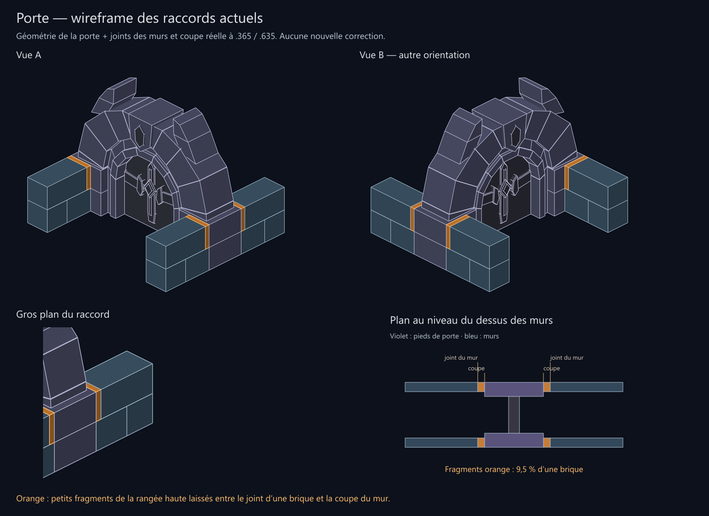

Les raccords actuels, sans texture
Les fragments orange proviennent d’une coupe à .365 / .635, décalée par rapport aux joints des briques à ⅓ / ⅔. Ils mesurent 9,5 % de la longueur d’une brique de la rangée haute. Les volumes violets représentent la porte, les volumes bleus les murs. Les joints de texture sont représentés en lignes droites ; les biseaux peints sont masqués.

Cette planche montre le problème actuel. Aucune correction de ces raccords n’a été appliquée lors de sa génération.
Géométrie · Contrôles